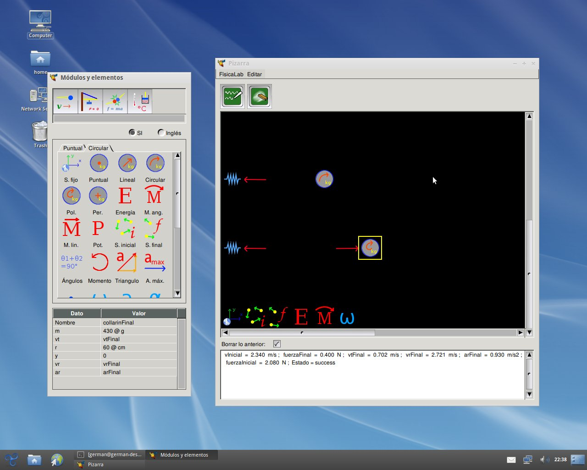

GNU FísicaLab |
 FísicaLab es una aplicación educativa para resolver problemas físicos. Su principal objetivo es permitirle al usuario enfocarse en los conceptos físicos, dejando a un lado los detalles matemáticos (de los que se encargara FísicaLab). Esto le permite al usuario familiarizarse con la física sin correr el riesgo de perderse en la matemática implicada. De esta forma, cuando el usuario gane confianza en la aplicación de los conceptos físicos, estará mejor preparado para resolver los problemas a mano (con papel y lápiz). La última versión de FísicaLab incluye los siguientes módulos:
El código fuente de FísicaLab puede encontrarse en el servidor principal ftp de GNU: http://ftp.gnu.org/gnu/fisicalab/ (vía HTTP) y ftp://ftp.gnu.org/gnu/fisicalab/ (vía FTP). También puede encontrarse en los espejos GNU; por favor utilice un espejo de ser posible.
Hay binarios disponibles y otras formas de Descargar y Obtener FísicaLab.
La documentación de FísicaLab esta disponible como PDF.
FísicaLab dispone de las siguientes listas:
Los anuncios sobre FísicaLab y otros paquetes GNU se publican en info-gnu (archivo).
El desarrollo de FísicaLab, y de GNU en general, es un esfuerzo voluntario, y usted puede contribuir. Para mayor información, por favor lea Como ayudar a GNU. Si usted quiere involucrarse, le recomendamos unirse a la lista de discusión (ver arriba).
FísicaLab es software libre; usted puede redistribuir y/o modificar este bajo los términos de la GNU General Public License publicada por la Free Software Foundation; en su versión 3, o (a su opción) cualquier versión posterior.
{kind=link}